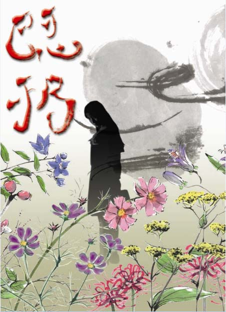

|
기빙
16세의 고등학생 미나미 카구라(南神楽, kagra trikol)는 어느 날 투신자살을 목격한다.
그 후로 그의 눈에는 ‘이미’라는 악령이 보이게 된다.
카구라는 눈의 이변을 같은 반의 신사 딸인 아메미야 히노토(雨宮丁, hinoto yuuan)에게 상의한다.
한편 카구라는 동급생인 수학소녀 히이라기 카스미(柊霞, kasmi sarbelia)의 비밀을 우연찮은 일로 알게 된다.
비밀을 누설하지 않도록 카스미에게 협박당하지만 카구라의 눈에 보인 것은 카스미에게 쓰인 이미였다…….

공개일 : 2011년 10월 30일
|